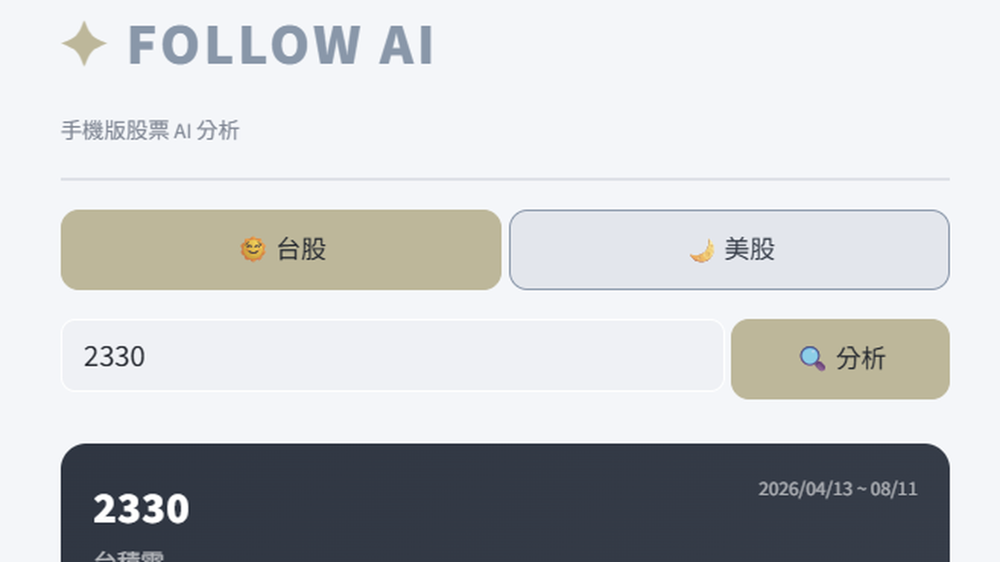
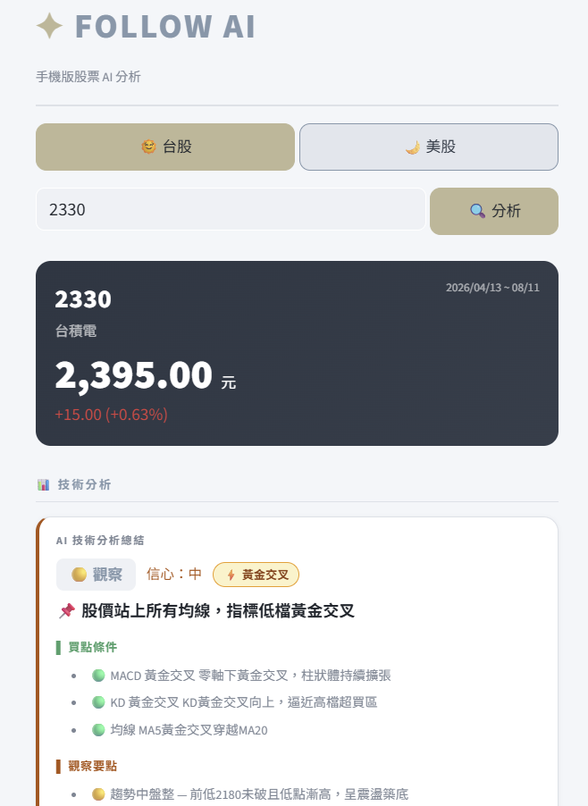
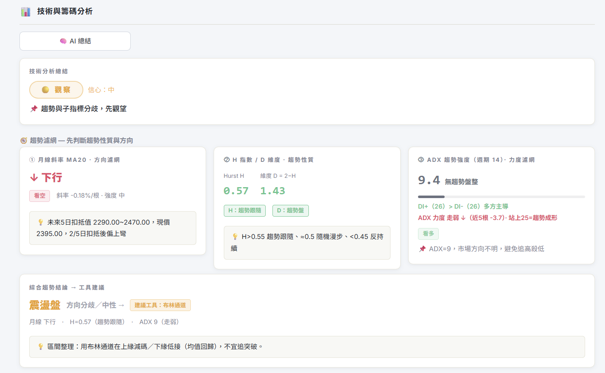
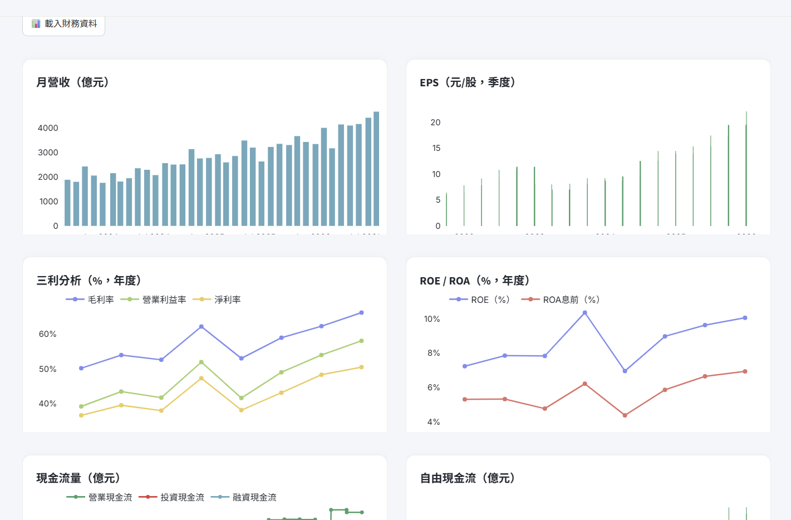
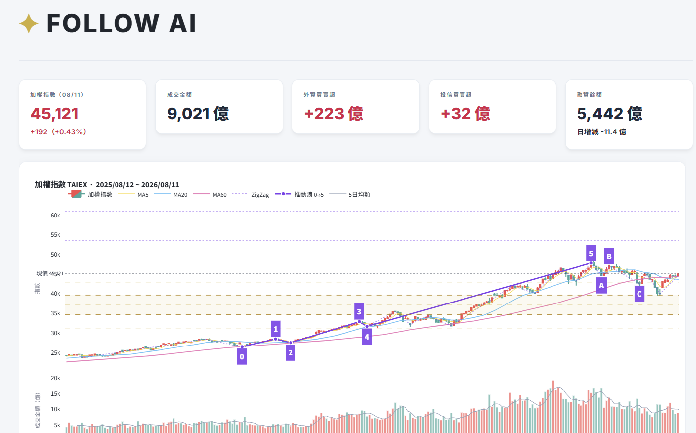

作品 · 量化投資
FollowAI 股票分析平台
2026.07 · 個人專案

FIG. 36 — 產品主畫面
關於這個作品
FollowAI 將個人投資研究整合成手機與桌面兩種操作情境。手機版可快速切換台股日盤與美股夜盤，查看個股行情、技術與財務資訊；桌面版則提供更完整的圖表、籌碼與大盤分析。
系統優先使用同步至 PostgreSQL 的市場資料，並在資料不足時串接外部來源；分析結果再交由 AI 整理為可讀的投資洞察。
作品亮點
手機版支援台股日盤與美股夜盤的即時個股研究
桌面版整合技術圖表、財務資料、籌碼與大盤分析
PostgreSQL 同步市場資料，AI 產出可讀的投資洞察
操作畫面



